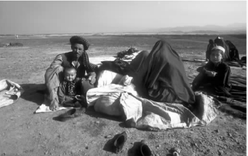
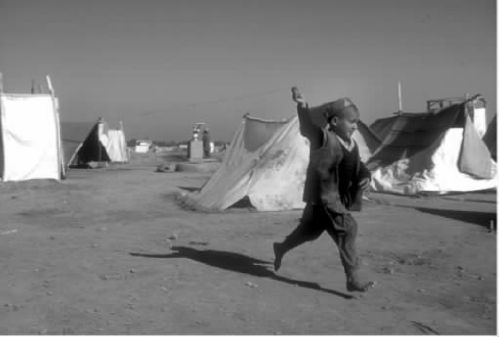
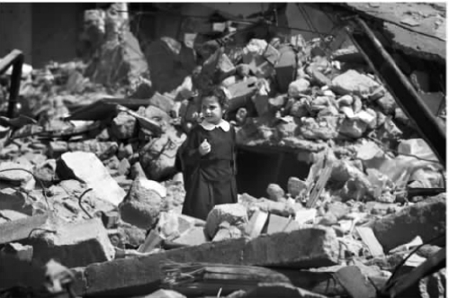
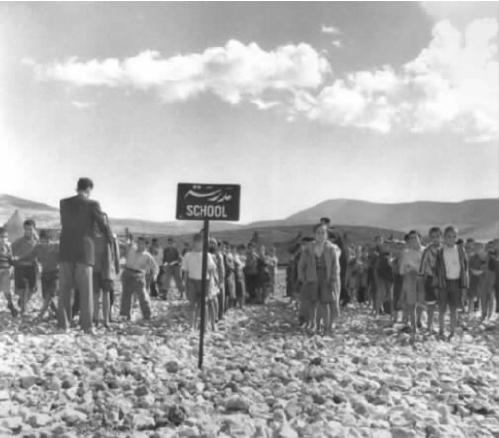
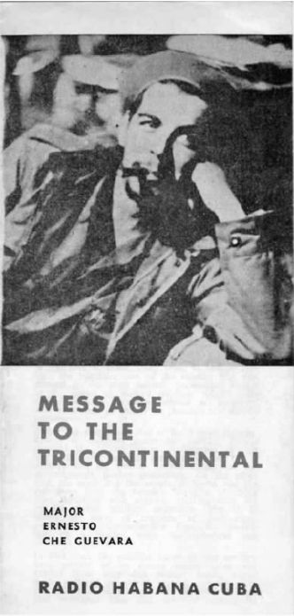

一天早上，当你从噩梦中惊醒，你发现你所处的世界已经发生了巨变。在夜幕的笼罩下，你已经被放逐到别的地方。睁开双眼，你首先注意到的是风吹过平坦荒芜的土地时留下的声音。
你和家人正朝着阿富汗与巴基斯坦边境的一块“活墓地”走去，走向白沙瓦——一座布满鲜花和间谍的城市，一座边境城市，从喀布尔过来的旅客的第一个落脚点。这些旅客穿过雕刻着图案的托克汉城门，沿着开伯尔山口由灰色岩石建成的弯曲小路走向远处的平原，最后到达通往加尔各答的主干公路。
在老城区的达沃什清真寺周围，是开伯尔集贸市场，这里的货摊鳞次栉比。这里有一条狭窄的街道，这条街道的房屋依势而建，高得直冲云霄。各家经过装饰的阳台错落有致，悬挂在空中。这便是著名的吉沙·哈乌尼市场一条街，这条街因说故事的人而闻名。几个世纪以来，那些曲折、离奇的故事一直被悠闲地喝着热气腾腾的琥珀色希沙斯茶的人们绘声绘色地讲述着——那些人正努力地想要超越专业的故事讲述者，或是在那些在货摊上用大茶杯喝着蜜汁茶的人之间口耳相传。可是那里传来传去的故事却并不是为你而讲述的。
你继续西行，走过往日的殖民地兵营，走过郊区大片的临建房屋（可是住在临建房屋中的人已经在这里居住很久了），在山前的一块平地上停住了脚步。家人中还有两个孩子也走散了。你身边只有一袋衣物、一个睡觉和祈祷用的垫子、一个盛水用的大塑料容器和几个铝制的罐子。这时路上有一些士兵走上前来阻止你继续前行。白沙瓦附近的贾洛扎难民营已经关闭。从阿富汗到这里来的普什图人被指引着走向杰曼。杰曼没有难民营，它只是一个“等待区”。在这里，你从帐篷顶上放眼望去，大地平坦无奇，进入视野的唯有远处喜马拉雅山映在地平线上的黑影。
因为这里不是官方难民营，所以你缓慢的前行不会引起任何人的注意，也不会有人为你登记注册。此时，你的孩子又累又饿，坐在光秃秃的棕色沙地上，他们鼓鼓的肚皮上留着因感染而形成的深红色印痕。你四处寻找水和食物，还希望找到三根木头和一张大塑料布来搭建一个栖身之所。这个将要搭建的就是你的帐篷，就是你和家人的居所。你们将要在少粮缺水，痢疾和霍乱流行的困境中寻求生存。
幸运的话，你可能在数月内离开这里。但是如果不幸运的话，你或许就会像肯尼亚的索马里难民，加沙﹑约旦﹑黎巴嫩﹑叙利亚﹑约旦河西岸的巴勒斯坦难民，或是像20世纪70年代出现在斯里兰卡或者南非的“国内流离失所者”那样，在这里滞留十年甚至几十年。这里将可能成为你和你的子孙们唯一的家。

图1 新贾洛扎难民营，白沙瓦，巴基斯坦，2001年11月：一个来自阿富汗北部的乌兹别克人家庭在这个难民营的新家。
爱德华·W.萨义德，《最后一片天空之后》（1986）
难民，你居无定所，无处落根。你已经被转移了，是谁转移了你？是谁让你离开了自己的国土？你或是被迫，或是为了躲避战争或饥荒而离开。你顺着逃亡的路线颠沛流离，艰难跋涉。但是一切都静止了。你已疲惫的生命戛然而止，你的生活断裂了，你的家庭支离破碎。你所熟悉的单调却可爱而稳定的生活和熟悉的社会也将随之一去不返。你在压缩的时间里，经历了资本主义的强烈介入，经历了平常安乐生活的终结，你已成为了那些跨越不同时代并经历过冷漠的现代性的人们的象征。你面对的是一个新世界，一种新文化，面对这种新文化，你不得不调整自己来适应它。你还要努力保留自己的可识别的身份。把这两者放在一起是一种痛苦的体验。也许有一天，你或者你的孩子会将它看作一种解放的方式，但不是现在。生活已过于脆弱，过于不确定。你什么都不能依靠。在世界的眼中，你只是一个客体。谁会在意你的经历、你的想法以及你的感受？各国的政客们争先恐后地立法，为的是阻止你进入他们的国家。他们对寻求避难者的答复是：禁入。

图2 新贾洛扎难民营，白沙瓦，巴基斯坦，2001年11月：一个阿富汗小男孩正在放风筝。
你是闯入者，你是错位的，你是不合时宜的。“难民”一词将你与你的国家隔离开来，你拖着疲惫的身躯，带着自己的信仰、语言、愿望、习惯及情感一脚踏进未被认同的、精神上深感陌生的世界里。所有的一切都是关于中断、错位、不堪回首的刺痛和痛苦的体验。这种体验加剧了后殖民时期的残酷体验，但也使其具有了创造性。
在贾洛扎难民营，你不愿意做的一件事情就是读这本书，即便你识文认字，即使这本书已被翻译成普什图语，你也不会读这本书。你说得多，会对许多人讲述自己日常生活中遇到的问题，有时候还会讲述那些又长又难懂的、与战争和饥荒相关的悲惨故事，你试图从自己的经历中提炼出一些人生感悟。如果你碰到一些来自其他地方的人愿意帮助你，你很有可能会对他们说出你的需求：药品、食品、避难所。你不会为那些从未谋面的人的利益而袒露你的经历。你不会将你的生活演绎成一个故事或者为别人而表述。但你仍然是这本书中不那么沉默的主角，因为它是为你而写的。即便你没有读过其中的文字，它们也是为你而写的。
爱加斯·阿马德，《在理论之中》（1992）
你能否读这本书，显示出了划分世界的一种主要的方式。划分有多种方式，比如：你是否有干净的水喝，是否有足够的食品和保健品，是否能读书，是否受过正规的教育。每一个人都会经历非正规的教育，实际上正规与非正规之间的界限往往是不确定的。有时你所需要的知识是你通过非正规的教育学来的，是从你的家庭和周边环境中学来的。你通过正规的教育渠道学到的知识是他人的知识。谁是这些知识的权威呢？它们是谁的知识呢？你从不同学校学到的知识是不同的，你的思维模式也是不同的。想一想孩子们身上的不同吧：在西方有些进入私立学校的孩子每年要花费一万五千英镑，2001年在伯利恒附近的阿哈德学校里的孩子却不得不在帐篷里学习，因为学校的校舍已经被以色列的军事行动所摧毁。看一看图3中那个巴勒斯坦女孩的学习经历吧！她每天步行穿过拉法难民营来到学校，而拉法难民营也在一天前被三辆以色列坦克和两辆推土机夷为废墟。
自从加沙地带的汗育尼斯难民营和约旦河西岸的贾拉左难民营首次开办露天学校以来，近五十年来巴勒斯坦几乎毫无变化。如果当年的那些孩子还活着的话，他们今天都已成了老人。他们住在难民营中，常是以色列军事行动打击的目标。不得不这样危险生活的人会有什么样的感受呢？
读到这里你想一想今天这些学校的处境，这将有助于你形成后殖民主义得以产生的视角。想一想阿哈德、贝德加拉、贾洛扎、贾拉左、杰宁、汗育尼斯、拉法的情况。那里人的生活怎能与你的或我的生活相比呢？想象一下在一个封闭又贫穷的社会中成长起来，又眼睁睁看着它在政府的指令下被推土机夷为平地是什么感觉。读一读布洛克·莫迪森撰写的关于索非亚镇在1958年被实行种族隔离的南非政府摧毁的原因。索非亚镇是约翰内斯堡黑人文化生活的中心。莫迪森不允许我们错误地认为在特权阶层和可怜的穷人之间存在的差别仅仅涉及受难与剥削的问题。还有其他种类的财富和损失。还有思考世界的其他方式。人性的，而非物质性的方式。

图3 一位巴勒斯坦的女学生正在加沙地带南部的拉法难民营的废墟中走着，2001年4月15日。这是在以色列根据临时和平协定把这一地区的控制权完全移交给巴勒斯坦后，以色列军队在不到一周内第二次对这里进行打击之后一天的情景。
布洛克·莫迪森，《怪罪历史》（1963）
当你看见一些孩子聚集在学校里，光着脚站在石头上，你便知道你身在“第三世界”国家。这个第三世界是后殖民的世界。“第三世界”这个词起源于法国革命时的第三等级。世界曾根据两大政治体系而被划分成资本主义和社会主义两大阵营，它们构成第一世界和第二世界。剩余的部分就构成了第三世界：那些刚刚从帝国主义殖民统治下获得独立的国家和“不结盟”国家。在1955年的万隆会议上，二十九个刚刚成立的亚非国家（包括埃及、加纳、印度和印尼）发起了不结盟运动。它们把自己看作一个独立的政治集团，用一种新的“第三世界”的视角来看待政治、经济和文化上的全球范围内的优先权。这是一个非常重要的事件，它标志着世界上的有色人种试图摆脱西方白人国家的枷锁。从政治上来讲，它是世人可走的第三条道路：既不属于西方集团也不属于苏联集团。然而，第三条道路的确立或发展是很缓慢的。这个名词逐渐与这些国家所遇到的政治和经济问题联系在一起，因而也就与贫穷、饥荒、动荡联系在一起，形成了一道“鸿沟”。

图4 早期的联合国难民救济和工程局修建的学校，贾拉左难民营，约旦河西岸，1951年。
在很多方面，万隆会议标志着后殖民主义首次成为一个具有自觉意识的政治哲学体系。十一年后，在1966年于哈瓦那召开的三大洲会议上，更富于战斗性的第三世界政治团体作为反对西方帝国主义持续影响的全球联盟出现了。这也是首次将拉丁美洲（包括加勒比海）与非洲、亚洲联系在一起，地处南部的这三个大洲便得名为“三大洲”。在许多方面，三大洲是一个比“后殖民”更精确的术语。三大洲会议创办了一本杂志（杂志干脆取名为《三大洲》），该杂志首次将后殖民理论家与实践家的写作联系在一起（其中包括阿米尔卡·卡布拉尔、弗朗兹·法农、切·格瓦拉、胡志明、让-保罗·萨特的文章），这样的写作表明的不是一个单一的政治和理论的立场，而是人类要求共同解放的共同努力。由于美国对古巴实行封锁，不允许古巴的杂志进入美国，所以许多美国的后殖民理论家没有意识到他们还有这样一些激进的先驱。
阿米尔卡·卡布拉尔，《回到源头》（1973）
作为术语，无论“三大洲”还是“第三世界”都有各自的道理，因为它们指代的是另一种文化，另一种“认识论”或者知识体系。在过去的三百多年里，甚至在更长的时间里，被世人称为知识的大部分文章，都是由那些生活在西方国家的人写就的，而且这种知识是由学术界即机构性的知识团体精心制作和认可的。这种知识中的很大一部分，特别是关于数学和科学的知识来自阿拉伯世界，这也就是为什么时至今日就连西方学者在写数字时还用阿拉伯数字的原因。西方学校着重强调西方文明是对拉丁文化和希腊文化的传承，但是大多数西方学者仍然丝毫没有意识到这样一个事实：他们每天都在读写阿拉伯语。想象一下这样一个新闻标题：《在发现“基地”组织与阿拉伯的联系后，美国学校禁止使用代数基本原理》。
切·格瓦拉，《给三大洲的信息》（1967）

图5 切·格瓦拉，《给三大洲的信息》，1967年4月16日。寄给亚非拉三大洲人民团结组织，寄自“世界的某个地方”，格瓦拉从1965年春离开古巴到1967年10月9日在玻利维亚被杀期间的一次公开演讲，在《三大洲》杂志第一期上公开出版发行。
后殖民主义源于其本身的知识，其中的许多知识是最近在漫长的反殖民运动的过程中被阐述出来的。后殖民主义源于这样一个假设：那些西方人，无论是不是学者，都会以同样严肃的态度，来看待有别于西方的其他知识和有别于西方的其他角度。后殖民主义或者“三大洲主义”，都是新兴知识的总称，这些知识来自属下阶层，即受压迫的民众，它们试图改变我们生活中的术语和价值观。如果你想学，那么你随处都可以学到这些知识。你开始的唯一条件就是要保证你会仰视而不是俯视这个世界。
非裔美国作家兰斯顿·休斯1940年在他的《大海》一书中，讲述了他坐船离开纽约去非洲的故事。他爬上甲板，将他随身携带的旅途阅读的书远远地扔进了大海。看着一本本书旋转着消失在大海中，他感到了自由的愉悦。他说：“当我把这些书扔进海里时，那感觉就像把压在心中的千百万块砖头搬开一样。”在他沿着祖先来的路回去的时候，他将他的所知所学全部抛弃了。在回非洲的路上，他把所有将非裔美国人置于社会低层的等级文化抛得一干二净。他回到了自己的大洲，与自己的人民在一起，以自己的方式做事情。他写道：
当休斯最终到达非洲，和那里的人民讲话时，他受到了伤害。
弗朗兹·法农的经历则与此相反。在马提尼克，他总被人们看作是白人。当他到达法国里昂时，人们在大街上见到他时喊道：“看！他是个黑人！”法农如此评论说：
法农的第一反应，如他自己所言，就是经历了“被封存到被挤压的物性之中”的痛苦。后来他意识到问题远比此严重得多。人变成了客体，被人指点、被人取笑，而这还仅仅只是表面上的情况。同时存在的情况是，处于这种情况当中的人内化了这一观点，将他们自己视为与众不同的低人一等的“他者”。
珍·莱斯，《焚书的那一天》（1968）
在《焚书的那一天》中，出生于美洲的欧裔白人小说家珍·莱斯讲述了一个加勒比海岛上的轮船代理商索亚先生的故事。他和一个有色人种的女人结了婚，但是，他经常在酒醉之后虐待她。索亚在他的房子后面建了一间小屋，那里摆放着他特意从英国邮寄来的书。他那只有一半白人血统的儿子埃迪体弱多病，正是他首先站出来质疑叙述者——一个小女孩，这个女孩认为所有来自“家乡”的东西，也就是来自英国的东西都比岛上的东西高贵。埃迪会从图书馆里借书，父亲去世后，埃迪成为了这些书的拥有者。几天后，埃迪和叙述者来到图书馆找到母亲，多年来，他的母亲一直在不幸的婚姻中煎熬。母亲的怨恨和愤怒爆发了出来，她将书从架子上弄到地上，分为两堆，想一堆出售，另一堆烧掉。当母亲将书架上的一本书拿下来时，埃迪求她不要将这本书烧掉，因为他正在读这本书。最终他从母亲手中把这本书夺了回来，并尖声喊道：“现在我也开始讨厌你了。”女孩也为自己抢到一本书，两人穿过花园跑到街道上，一起在黑暗中坐了一会儿。埃迪开始哭泣，为了表示对埃迪极度孤独的同情，女孩问埃迪那是本什么书。那本书是吉卜林的小说《吉姆》。可女孩就没有那么幸运，虽然她本能地感到她的战利品是一个很重要的东西，但是当她想看看究竟时，却很失望，“因为那本叫作《像死亡一样坚强》的书是用法语写的，看起来索然无味”。
珍·莱斯的故事读起来不太像殖民主义的寓言故事，倒更像是关于后殖民的权力关系的寓言故事，在这个故事里，数十年的等级剥削和侵略性的种族文化所促生的仇恨，使得索亚夫人强烈反对这样一种优越感的文化基础。埃迪的矛盾反应是：他既憎恨他的父亲，憎恨“家”，也就是英国，但是他又想得到父亲的书。这又将他带入与母亲的矛盾之中：他爱母亲，但是母亲恨他父亲所有的书。这也把埃迪推向边缘的位置，使他介于矛盾的、竞争的文化之中：他一方面在情感上认同一种文化，同时又在理智上对另一种文化产生了好奇。
这种矛盾的态度和多重身份被津巴布韦小说家奇奇·丹格伦伯加定义为本地人的“不安的状况”。他们跻身于不同文化的矛盾层面之中，当殖民文化或主导文化通过教育进入本地的初始文化中时，便会产生一种不安的状况，其中包括矛盾、不稳定、文化界限的混乱（内部或外部的）以及与“他者”文化的融合。在《不安的状况》（1988）这本书中，讲述者坦布泽梦想着接受良好的教育，梦想着能进入她那位已经接受了白人文化的校长亲戚的房间里。但是她发现她不知道应该坐在哪里，她不知道应该如何阅读房间里的习惯性符号，她不知道应该使用那种语言——英语还是绍纳语？生活在这个社会中的个体要屈从于一种痛苦，这种痛苦被法农称为杂交裂缝中的存在，他们要试图同时经历两种不同的、互不兼容的人生。如果你想成为白人，改变你的种族和阶层，你就要吸纳主流文化，这种不同身份之间的妥协，不同价值体系层面之间的妥协（尤其是对女性而言，对她们来说这些选择看起来是互相矛盾的）是其中不可或缺的一部分。否则，即使你接受了白人的价值观，你也不可能是一个十足的白人。
焚书可以看作是要求解放的表示，或是无力通过别的途径表明自己立场的一种表现。当然，通常情况下当这种行为包含一个民族主义者对少数民族文化的攻击时，就被认作是压迫性的、破坏性的、法西斯的行为，它确实如此。以1981年5月僧伽罗统一国民党烧毁贾夫纳大学图书馆为例，“数以千计的泰米尔语书籍、手稿、风干的棕榈叶手稿、各种文件被烧毁，其中包括《贾夫纳历史》的孤本”。1992年5月，塞尔维亚民族主义武装在萨拉热窝的东方学院投放燃烧弹，这里收藏着欧洲最重要的伊斯兰手稿，“事实上所有手稿都被大火烧毁，包括五千二百六十三册阿拉伯语、波斯语、土耳其语、希伯来语手稿和阿拉伯语手稿中用塞尔维亚——克罗地亚——波斯尼亚方言撰写的部分，以及数以万计的奥斯曼帝国时代的文献”。种族清除不仅包括人的毁灭，也包括知识的毁灭和历史的毁灭。
“布拉德福德的穆斯林”不是指那些居住在英国布拉德福德的穆斯林，而是指那些生活在西方的被认为是“宗教激进主义者”的穆斯林。1989年1月14日，一群生活在布拉德福德和奥尔德姆的穆斯林公开烧毁了萨尔曼·拉什迪的《撒旦诗篇》。评论家纷纷将这一行为与1933年纳粹在德国的焚书之举相提并论。通过对比，我们发现激进的基督教群体在美国烧毁J.K.罗琳的《哈利·波特》的行为没有受到太多的媒体关注。
拉什迪的立场比较复杂，因为在此之前他一直是英国最著名的反种族主义的支持者之一，是移民社区政治权益和观点的代言人。突然有一天他发现在自己所代言的少数族裔的社区内有着和自己的多元文化融合（他称之为“宗教文化融合”）的观点截然不同的看法，并且这些看法得到了一些少数族裔的作家（例如哈尼弗·科利什）以及媒体的支持。由于很多少数族裔的人们在日常生活中都受到了压迫，所以在受人赞美的多元文化主义和这些少数族裔的真实状况之间存在着很深的裂痕。
对西方而言，整体上这看上去似乎很像自由主义者与保守主义者之间的区别，前者接受了同化，而后者却仍想保留他们的未被玷污的文化身份。对于西方的少数民族或者对于那些居住在西方之外的人而言，这种区别就不是那么清晰。对个体来说，想要同时持有两种观点并不是不寻常的。后殖民主义的愿望中存在着不安，这种不安的状况受到了无法掌控的矛盾心理的侵扰。
霍米·K.巴巴，《文化的定位》（1994）